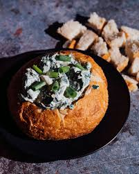

Best Spinach Dip Ever

Description
My dad's spinach dip recipe. The entire family loves this flavorful spinach mixture served in a tasty bread bowl. Your family will love it, too.
Takes 15 minutes to prepare and makes 6 servings.
Ingredients
- 1 (16 ounce) container sour cream;
- 1 cup mayonnaise;
- ½ (10 ounce) package frozen chopped spinach, thawed and drained;
- 1 (4 ounce) can water chestnuts, drained and chopped;
- 1 (1.8 ounce) package dry vegetable soup mix;
- 1 (1 pound) loaf round sourdough bread.
Steps
- Gather all ingredients.
- Mix sour cream, mayonnaise, spinach, water chestnuts, and dry soup mix together in a medium bowl. Chill in the refrigerator 6 hours, or overnight.
- Slice off the top of the sourdough round and pull out the soft interior, leaving a sturdy bread bowl.
- Fill with spinach mixture. Tear removed bread chunks into pieces for dipping.